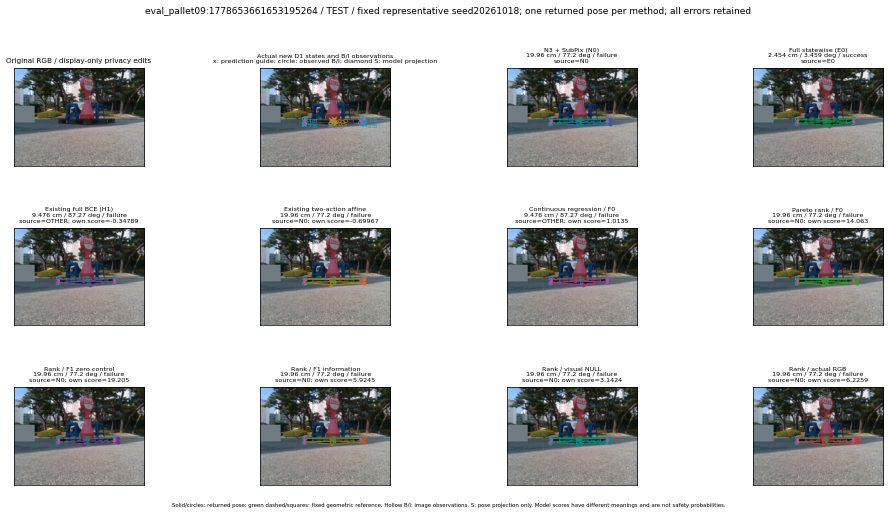

실선은 반환 자세, 초록 점선은 고정 기하 참조입니다. S는 영상 관측이 아닙니다. 점수는 모델별 의미가 다르며 보정된 안전 확률이 아닙니다. 개인정보 처리는 표시 사본에만 적용했습니다.
| 방법·seed | 위치 / 회전 / 공동성공 | 실제 출처 | 선택 후보 | 각 모델 자체 점수 |
|---|---|---|---|---|
| N0 | 19.96 cm / 77.2 deg / failure | N0 | N/A | N/A |
| E0 | 2.454 cm / 3.459 deg / success | E0 | N/A | N/A |
| E0_REGENERATED | 2.454 cm / 3.459 deg / success | E0 | E0_REGENERATED | N/A |
| POSEFIX_SUBPIX_PF_ANCHOR | 6.888 cm / 77.27 deg / failure | OTHER | N/A | N/A |
| POSEFIX_SUBPIX_YOLO_ANCHOR | 6.888 cm / 77.27 deg / failure | OTHER | N/A | N/A |
| D1_H1_MLP_s20261018 | 9.476 cm / 87.27 deg / failure | OTHER | G13/ORIGINAL_WD/sample/1 | -0.3478865325450897 |
| D1_H1_MLP_s20261019 | 9.479 cm / 87.27 deg / failure | OTHER | G13/ORIGINAL_WD/selected | -0.2166786938905716 |
| D1_H1_MLP_s20261020 | 9.476 cm / 87.27 deg / failure | OTHER | G13/ORIGINAL_WD/sample/1 | -0.9712884426116943 |
| D1_H1_PAIR_MLP_s20261018 | 2.454 cm / 3.459 deg / success | E0 | E0_REGENERATED | -1.7561466693878174 |
| D1_H1_PAIR_MLP_s20261019 | 19.96 cm / 77.2 deg / failure | N0 | N0 | -1.8410899639129639 |
| D1_H1_PAIR_MLP_s20261020 | 19.96 cm / 77.2 deg / failure | N0 | N0 | -2.6271064281463623 |
| D1_H1_PAIR_ROLE_AFFINE_s20261018 | 19.96 cm / 77.2 deg / failure | N0 | N0 | -0.6996702551841736 |
| D1_H1_PAIR_ROLE_AFFINE_s20261019 | 19.96 cm / 77.2 deg / failure | N0 | N0 | -1.124231219291687 |
| D1_H1_PAIR_ROLE_AFFINE_s20261020 | 19.96 cm / 77.2 deg / failure | N0 | N0 | -0.7068148255348206 |
| R_CONT_F0_s20261018 | 9.476 cm / 87.27 deg / failure | OTHER | G13/ORIGINAL_WD/sample/1 | 1.0135133266448975 |
| R_CONT_F0_s20261019 | 9.476 cm / 87.27 deg / failure | OTHER | G13/ORIGINAL_WD/sample/1 | 1.1932979822158813 |
| R_CONT_F0_s20261020 | 9.476 cm / 87.27 deg / failure | OTHER | G13/ORIGINAL_WD/sample/1 | 1.2058169841766357 |
| R_ORDER_F0_s20261018 | 19.96 cm / 77.2 deg / failure | N0 | N0 | 14.063019752502441 |
| R_ORDER_F0_s20261019 | 19.96 cm / 77.2 deg / failure | N0 | N0 | 3.9300622940063477 |
| R_ORDER_F0_s20261020 | 19.96 cm / 77.2 deg / failure | N0 | N0 | -8.213967323303223 |
| R_ORDER_F1_ZERO_s20261018 | 19.96 cm / 77.2 deg / failure | N0 | N0 | 19.204822540283203 |
| R_ORDER_F1_ZERO_s20261019 | 19.96 cm / 77.2 deg / failure | N0 | N0 | 2.9570116996765137 |
| R_ORDER_F1_ZERO_s20261020 | 19.96 cm / 77.2 deg / failure | N0 | N0 | 9.119501113891602 |
| R_ORDER_F1_s20261018 | 19.96 cm / 77.2 deg / failure | N0 | N0 | 5.92454195022583 |
| R_ORDER_F1_s20261019 | 19.96 cm / 77.2 deg / failure | N0 | N0 | 6.5299906730651855 |
| R_ORDER_F1_s20261020 | 19.96 cm / 77.2 deg / failure | N0 | N0 | 4.3385467529296875 |
| V_ORDER_NULL_s20261018 | 19.96 cm / 77.2 deg / failure | N0 | N0 | 3.142381191253662 |
| V_ORDER_NULL_s20261019 | 19.96 cm / 77.2 deg / failure | N0 | N0 | 1.8624736070632935 |
| V_ORDER_NULL_s20261020 | 19.96 cm / 77.2 deg / failure | N0 | N0 | 5.866084575653076 |
| V_ORDER_RGB_s20261018 | 19.96 cm / 77.2 deg / failure | N0 | N0 | 6.225874900817871 |
| V_ORDER_RGB_s20261019 | 19.96 cm / 77.2 deg / failure | N0 | N0 | 1.7720346450805664 |
| V_ORDER_RGB_s20261020 | 19.96 cm / 77.2 deg / failure | N0 | N0 | -5.327826976776123 |